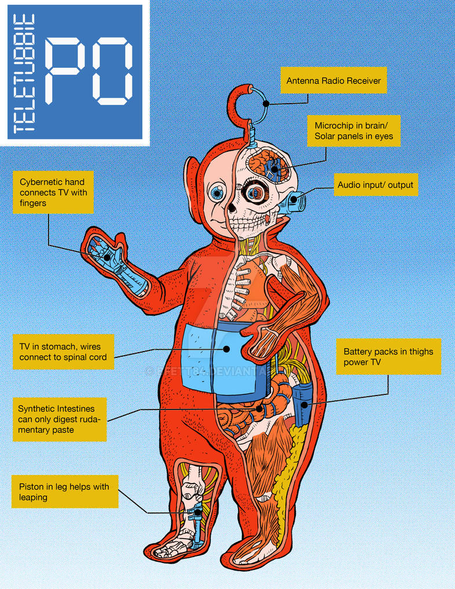
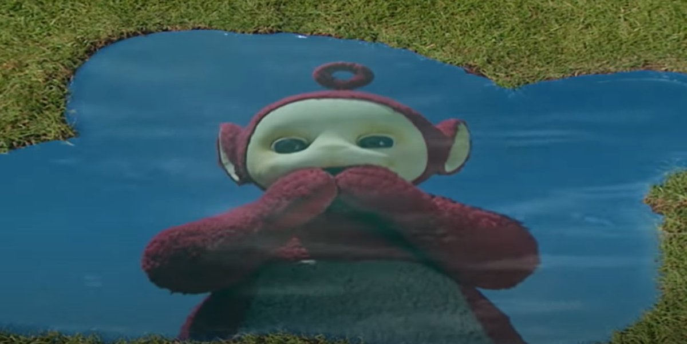
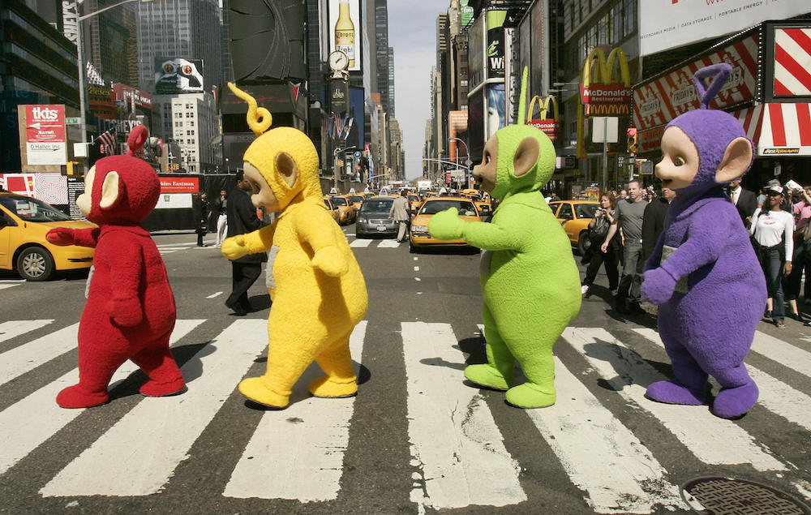

Home
Curiosidades
Comunidade
Extras

Aqui serão listados alguns tópicos de curiosidades sobre os tubbies
- Habitat
- Dieta
- Anatomia
- Definição de Gênero
- Inteligência
- Natureza
Habitat

Seu habitat natural é chamado de Teletubbyland, uma terra com muitas árvores, arbustos e flores, além de um sol com rosto de bebê humano. Eles vivem e dormem em uma casinha chamada de Home Dome
(ou Tubbytronic Superdome), nome dado por se parecer muito com um domo subterrâneo. Outros seres que vivem nesse mundo são coelhos e o aspirador de pó Noo-Noo.
Dieta
Sobre sua dieta, são criaturas "viciadas" em Tubby Custard (em português chamado de creminho gostoso), pois é a única refeição que os Teletubbies comem todos os dias. Fora do universo, esse creme
se consiste em purê de batata com corante, uma curiosidade pouco conhecida. Ele sai de uma máquina própria, de fácil manuseio e consideravelmente lenta. O creme faz muita sujeira, por isso
os Tubbies costumam usar babadores para comer.

Anatomia

Eles são comprovadamente ciborgues, seres vivos com peças de robô que os auxiliam no dia-a-dia. É perceptível que são seres vivos pois, além de terem emoções, eles tem problemas como dores de barriga e soluço.
Não existem muitas informações que possam chegar a definir a anatomia dos Teletubbies, mas é possível teorizá-la a partir das suas complicações de saúde. Ao lado vemos uma fanart (arte não-oficial feita por fãs)
de como seria sua anatomia.
Definições de Gênero
Os gêneros são uma parte bem complicada, pois a única característica que temos pra identificar isso é a voz e a altura. Tinky Winky e Dipsy são machos, e os mais altos do grupo. Po e Laa-Laa, as
mais baixas, são fêmeas. Muitos dos estereótipos de homem e mulher da nossa sociedade não são percebidos aqui, por exemplo: Tinky Winky tem como seu brinquedo favorito uma Bolsa Tote, uma bolsa
considerada item feminino aqui na realidade. Enquanto isso, Laa-Laa gosta mais de brincar de bola, um gosto visto sendo mais comum por garotos. Outros itens que também podem ser vistos como quebra
de estereótipo é a cartola de bolinhas de Dipsy e o patinete de Po.
Inteligência

Durante os episódios não se mostraram sendo muito inteligentes, tendo uma mente bem infantil e inocente. Mesmo tendo tantos equipamentos tecnológicos em sua casa, é perceptível a dificuldade em resolver problemas.
Demonstram bastante interesse em aprender, mas não tanta capacidade.
Natureza
Pacíficos, não tem a prática de machucar outros animais. São bem ansiosos e alegres, não se mostrando agressivos em nenhum momento.
São criaturas muito higiênicas, sempre que se sujam tem a tendência de se limpar com panos. Roupas são geralmente usadas como itens de “roleplay”, ou seja, acessórios para diversão ou confraternização. Um exemplo disso é a cartola de Dipsy e tutus de balé usados por todos, roupas que não os auxiliam em quaisquer atividades mas servem para “roleplay”.
